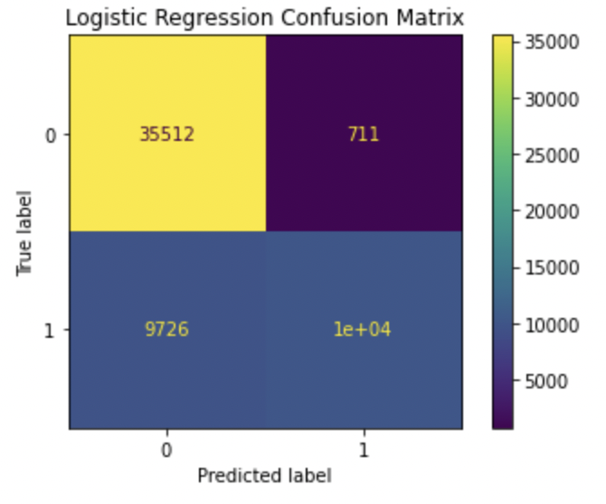
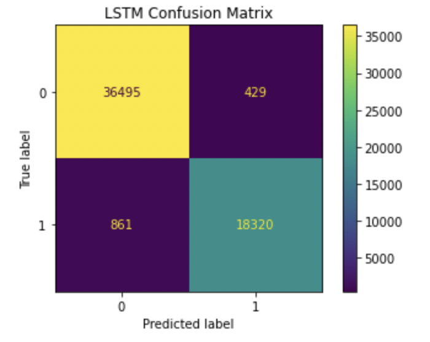
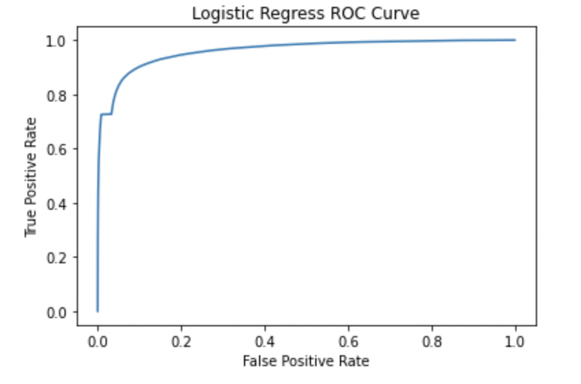
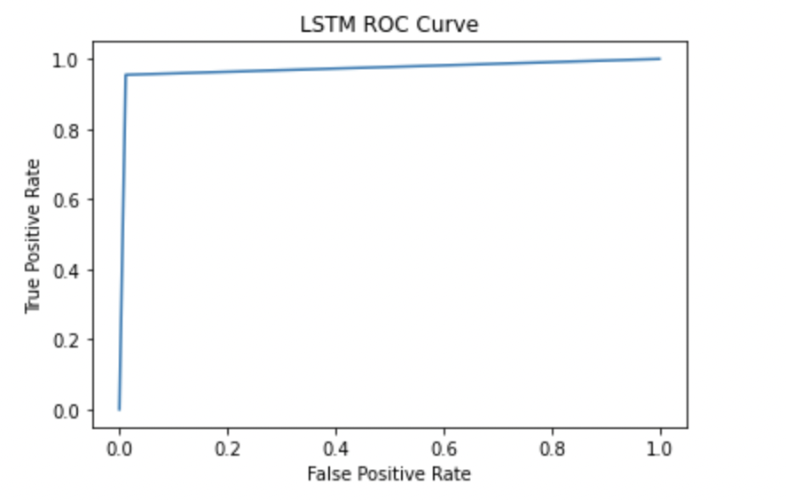

In the Machine Learning part, we have two business questions to explore. One is "what makes users in the game subreddit like/dislike a post/comment." The other is "how many categories can those posts be placed in and what are they?" We will explore these questions in the following paragraphs, and the technique results will be in the analysis part.
The score is a crucial element in Reddit. It will affect who sees the posts and whether they will be popular.We aim to use many Reddit submissions with their features, such as hiding scores, whether the content is suitable for people under 18, whether this post is a video, the number of comments, and the submissions' length, to predict the submission's score. After our data processing, we found that our existing data can explain around 40 percent of the scores. We want to explore and analyze more aspects of the Reddit data and find new results. We build two machine-learning models that utilize the posts from both subreddits. The objective is to see if machine learning algorithms can identify the subreddits a post belongs to based on its content. Both algorithms perform well (accuracy > 95%), indicating that the post's content from different subreddit is significantly distinguishable. The algorithm can help users put their posts into the correct subreddit.
In the Machine Learning part, we have two business questions. Moreover, we would like to change one of our business goals from "How many categories can those posts be placed in? And what are they?" to "Whether we can use texts from the users to split those posts into different subreddits?". We want to change this topic because the original posts need us to label the data manually and cannot label such big datasets. Since we have two subreddits to analyze, we used the subreddit labels to do the classification. We perform two methods: the traditional machine model (Logistic Regression) and the modern machine model (Long-Short Term Memory). After performing the models, we compared the afterward results.
We already get the tokenization for the submission content from the NLP part. Using the CountVectorizer, the contexts have been converted from a collection of text documents to vectors of token counts. After using IDF to judge the importance of each word and get the features, the dataset is ready to perform the machine learning prediction. For the label part, we set zero for league of legends, and one stands for Minecraft.
| 
Figure1: Confusion matrix of logistic regression model |

Figure2: Confusion matrix of LSTM regression model |
The first method to do machine learning is logistic regression. The method divide 80% of the data as the training data and the other 20% as the testing data. The ROC curve is shown above by summarizing the model over the training set. The training set area under the AUC-ROC curve is 0.959, which is a pretty high accuracy for the training set. The AUC-ROC score on both the training and testing dataset proved its strength. On the other hand, the logistic regression model shows an accuracy of 0.952 on the testing dataset. LSTM (Long short-term memory) is a type of recurrent neural network that keeps track of past information, which makes it strong with text data. The model we built has 0.973 accuracies on the training set and 0.978 on the test set. The results indicate a significant difference between the two subreddits, League of legends and Minecraft. Classifying an unlabeled post to which subreddits they are in is possible.
| 
Figure3: ROC Curve of logistic regression model(training data) |

Figure4: ROC Curve of LSTM model(training data) |
| Model | AUC-ROC | Log_Loss | Accuracy |
|---|---|---|---|
| Logistic Regression | 0.959 | 6.425 | 0.814 |
| LSTM | 0.973 | 0.782 | 0.977 |
This project then tries to use three regression models, linear regression, Gradient-Boosted Trees (GBTs), and random forest to see if there is a way to predict the scores of posts. Ten interested variables: "subreddit", "hide score", "over-18", "is_video", "gilded", "stickied", "num_comments'', "day_of_week", "hour", and "text_length" are selected in the model training process. Except "hour", other variables are all boolean or string and have been transformed into the categorical variables. For the GBTs model, we take the maxDepth as 20, stepSize as 0.2, and maxIter as 50. For the linear regression model, maxIter is set at 10. For random forest regression, we take numTrees as 10, maxDepth as 30.
The evaluations of the three models shown below. Overall, they need to perform better in predicting the posts' scores since their R-Squared values are not very high. The random forest regression model works best with less RMSE and MAE and an R-squared of 0.4647. The linear model has a smaller RMSE, but R-squared is worse than GBTs. Based on the density plot, the random forest regression model better captures the actual scores' distribution.
| Model | RMSE | MAE | R-Squard |
|---|---|---|---|
| Linear Regression | 553.37 | 83.43 | 0.329 |
| Gradient-Boosted | 526.19 | 69.87 | 0.3933 |
| Random Forest Regression | 494.28 | 63.75 | 0.4647 |
Figure5: Comparison density plot of results of three regression models and actual score
Since the Random Forest model performs the best model, we especially check the feature performance for this model. There are several exciting factors we found. num_comments has the most critical feature, which has an affecting score of 0.47. The second important is gilded, which means someone gave the poster Reddit gold on the post. Text length and when to post are the third and fourth importance. Other factors seem to have rarely influenced the model.
For question 1 part, we use the pipeline to get the features of each word. The pipeline includes transferring text word to CountVectorizer and using IDF to count the weight of each word to get features. For question 2, we also apply a pipeline to essentially compare three different model options.